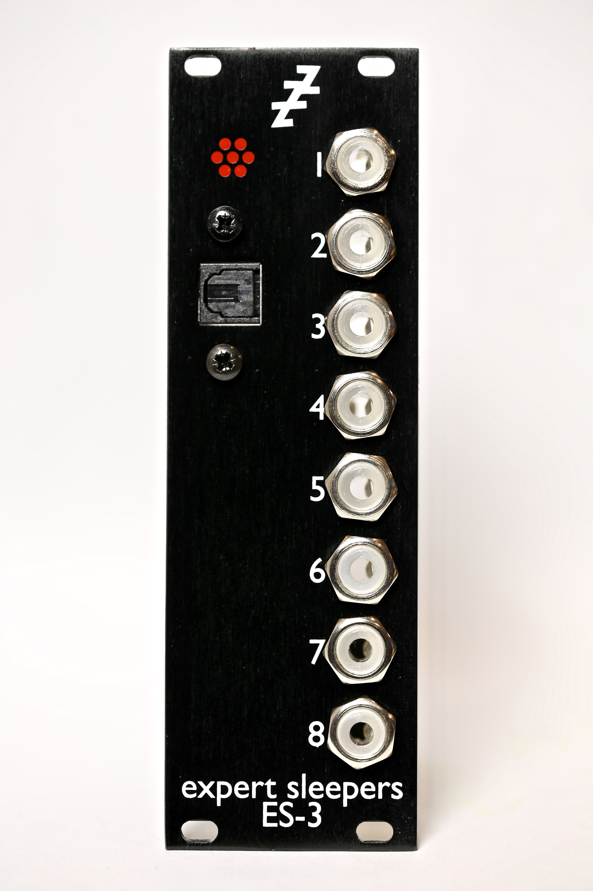
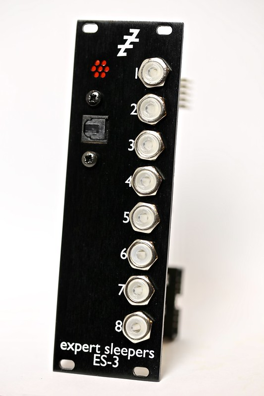
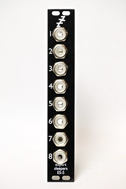

Ultimate DAW-to-CV Connectivity
The ES-3 converts eight channels of ADAT Lightpipe input to DC coupled outputs on 3.5mm jacks for connection to other Eurorack and CV controllable analoge sythesizers and modules. , and With the ES-3, a single optical cable is all that is need to bring direct CV control from your DAW right into the heart of a modular system.
-

DAW-to-CV Connectivity
The outputs can be used as control voltages (CVs), for example with software such as Expert Sleepers Silent Way.
-

Modular-level Audio
The outputs can also be used to send audio at high, modular synth-compatible levels.
-

Optional Expander
The Expert Sleepers ES-5 adds an additional eight outputs for even more control.
-
ES-3 MK4 Specifications
Panel Width 8HP Module Depth 50mm Input Connection Optical, ADAT Lightpipe standard D/A Conversion 24bit Signal to Noise Ratio 113dB typical Output Connections 8x 3.5mm (DC coupled) Maximum Output Voltage ±10V DC Current Draw 148mA on the +12V rail, 18mA on the -12V rail Indicators LED for ADAT clock sync; illuminated 3.5mm jacks indicate output voltage (+ve/–ve)
ES-3 with Silent Way
ES-3 with Modular-level Audio
-
Electronic Musician Editor's Choice Award, 2014
“Whether you use Max/MSP, NI Reaktor, or the company’s own Silent Way plug-in, the ES-3 Mk3 is an essential tool for any serious modular-synth user.”
-
Future Music Magazine
“Silent Way is a no-brainer” “Incredible options for controlling modular synths” “... one of the most friendly plug-and-play pieces of hardware you'll ever have the pleasure to use.”
-
Music Radar Five Stars
"Silent Way opens up sound design options that'd be expensive, difficult or impossible any other way."